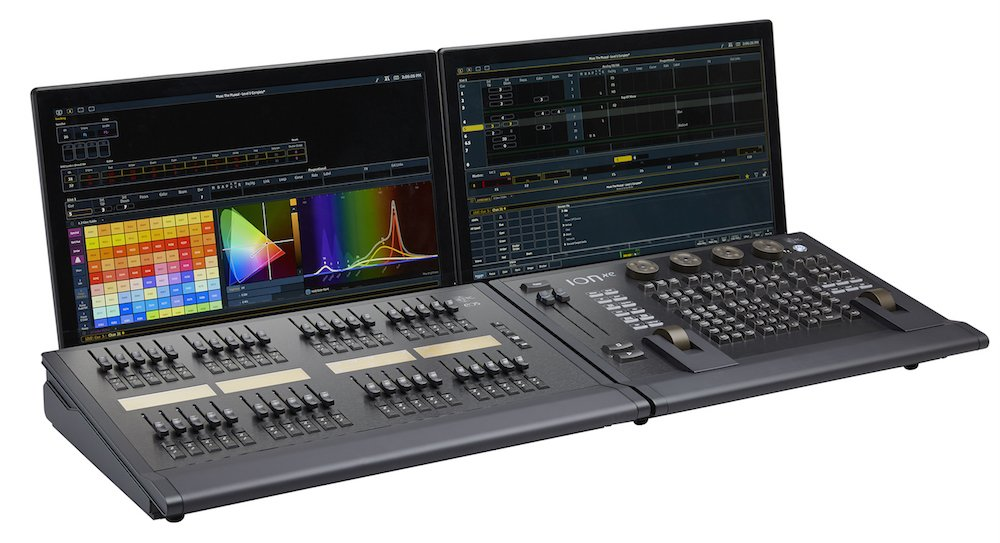
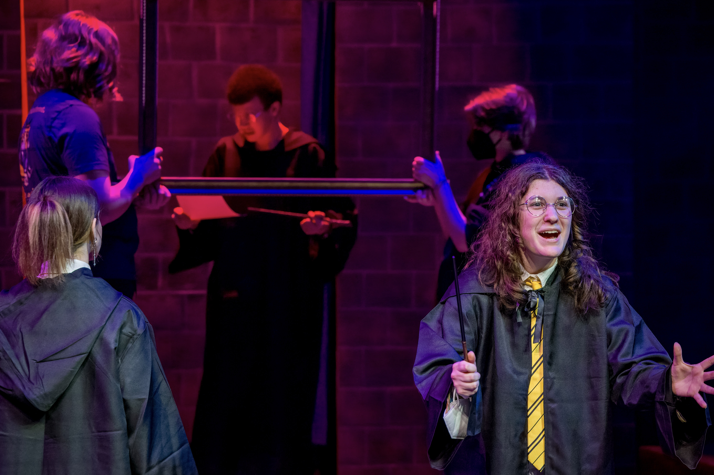
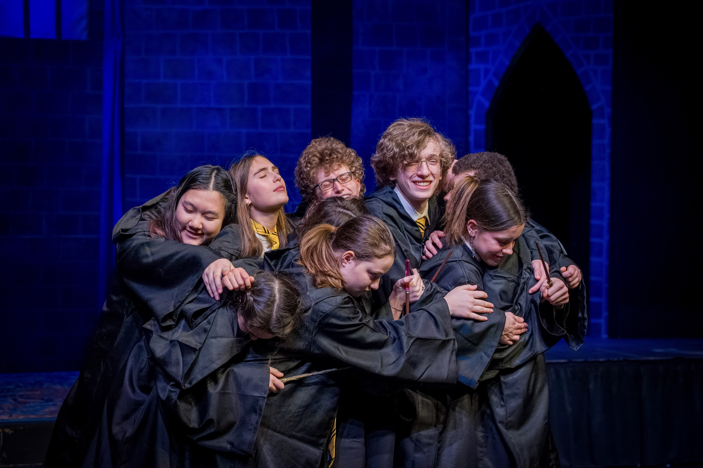
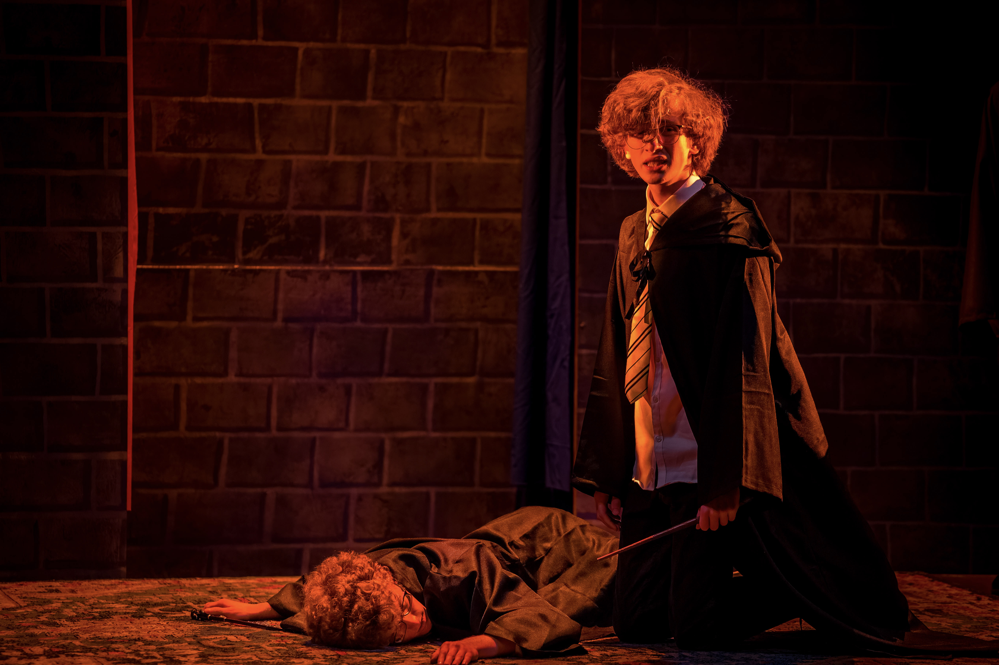

My favorite thing at school is certainly theatrical lighting desing. In the pretentious words of my college application essay, it is the role of the lighting designer to:
"Harmonize the lights, elevating the complex humanity of the scene—tragic, comic, and inspiring."
In less pretentious words, ya gotta have light on the stage so that the actors don't trip and fall.
I recently worked as the lead lighting designer for Puffs. It was awsome, and A LOT of work. Across 47 scenes and 5 massive battle sequences, I programmed 350 light queues. But to succesfully light the show, our team went through a design process with many stages.
Let's look at each of these stages in excruciating detail!
Before you start lighting, you need to read the script...many...many times. You annotate the script to gain an understanding of the timing of the show and identify recurring locations and effects. Generally speaking, there are three types of light setups: Washes, spotlights, and effects. Washes are light queues that cover the entire stage. Spotlights cover a contained part of the stage to draw attention. And effects are the coolest because you get to blind the audience! Anything from strobe lights to fiber-optic stars could qualify as an effect.
Once you understand the show, you can hang and focus the lights to meet the needs of the script. The most important positions to hang lights from are:
Toplight, sidelight, and backlight can introduce rich, saturated colors that highlight actors' edges and accentuate the set. However, frontlight should be kept close to a neutral white, otherwise skintones become distorted. It is important to isolate the light hitting the actors from the light hitting the set. For example, in the following image, you can see that the actor and the set are lit with distinctly seperate colors, even at close proximity.

Hanging lights in strategic positions is the hardest part of the process, so here are some resources to learn more:
Stage Lighting 101 — Everything You Need to KnowFun Fact: The 100 pound lights hanging directly above the actor's heads are attatched to the ceiling with nothing but friction!
Palettes are the variables of lighting design. They let you "soft code" light queues so that if you decide to change an attribute in one queue it automatically updates in all other identitical queues. When creating color palettes, there are many factors of color theory to consider. For example, we frequently encounter orange and blue light in the real world: from a blue overcast day to the burning orange of a fire. Thus, orange and blue lights work well for frontlight colors becuase they look realisitc on skintones. Pink and green light, however, rarely occur in the natural world, and thus introduce a sense of fantasy when used. The following is a table of the color palettes used for each recurrent location in Puffs.
| Location | Main Color(s) | Highlight Color(s) |
|---|---|---|
| Puffs Common Room | Orange | Purple and Magenta |
| Great Hall | Orange and Pink | Violet |
| Creepy Area | Purple and Blue | Red |
| Hallway | Orange | Indigo and Pink |
| Outdoors | Orange and Cyan | N/A |
| Battle Sequences | Purple and Blue | Mint |
This is where the lighting design process shifts from artistic to very technical. The lighting designer uses a special console to implement all their ideas. At EPS, we use the ETC IonXE Console. This console uses a specialized keyboard to make it easier to program queues and effects. Although the device is overwhelming at first, it becomes intuitive with practice. Additionally, ETC provides a great training series, found here: ETC Training Series
So now you've learned about my favorite part of school and hopefully a little bit about lighting design! For me, programming lights is really addictive. It took me about 100 hours to complete the lighting design for Puffs, including one programming session that lasted 10 hours straight. Anyways, here's some photos of the final result!
|  |  |
|---|---|
|
 |
| Monday | Tuesday | Wednesday |
|---|---|---|
| Tuscan Chicken Pasta | Cajun Shrimp | Chicken Fried Rice |
| 8/10 | 10/10 | ?/10 |